Anonymous project page
STELLAR
Structure-Aware Progressive Refinement for Localized Text-Guided Point Cloud Editing
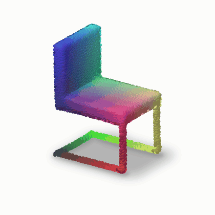
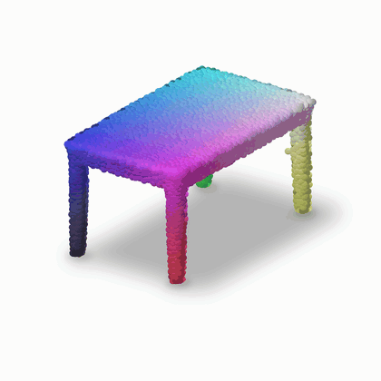
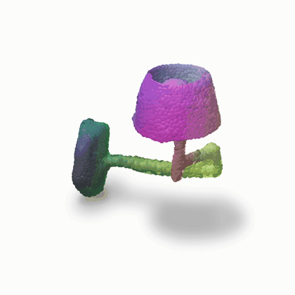
The problem
Introduction
Localized text-guided point-cloud editing aims to modify a target part while preserving the surrounding geometry. Existing diffusion editors use text conditions to specify the desired change and part masks to identify editable coordinates. BlendedPC, for example, combines editing and reconstruction trajectories through mask-based coordinate blending. However, controlling where coordinates change does not explicitly constrain the geometric relations among those coordinates.
This distinction matters for structured objects with repeated legs, bilateral supports, or rotationally arranged components. Local edits can disrupt these relations even when the protected region is retained. Uniform structural correction is also insufficient: points near attachment boundaries may require weaker intervention, and geometric deviations can occur at different spatial scales. Structural guidance must therefore account for the relation being encouraged, the location of the correction, and its geometric scale.
We propose STELLAR, a structure-aware progressive refinement framework that coordinates these three aspects within reverse diffusion. Part-conditioned symmetry projection constructs geometric targets through set-wise correspondences under category-part priors. Dynamic spatial reliability calibration weights symmetry residuals using a source-derived spatial field, reducing correction strength near protected geometry. Hierarchical geometric consistency refinement aggregates source-relative residuals across fixed spatial partitions and bounds the resulting correction. The refined clean estimate guides numerical sampling, while reconstruction-based coordinate blending supplies protected coordinates.
Our contribution is a coordinated refinement procedure linking part-level structural targets, point-wise correction strength, and multi-scale residual guidance. The framework targets edits compatible with the selected structural priors; it does not assume that symmetry or source-shape preservation is appropriate for every instruction.
Figure 1
Overview
Given a source point cloud, a text instruction, and an editable mask, STELLAR refines editable coordinates through part-conditioned symmetry projection, dynamic spatial reliability, and hierarchical geometric consistency. Protected coordinates are preserved through the reconstruction branch and coordinate blending.
Open the original overview PDF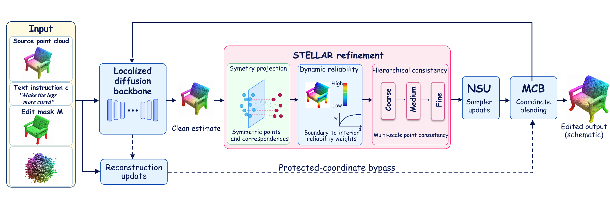
Figure 2
Workflow
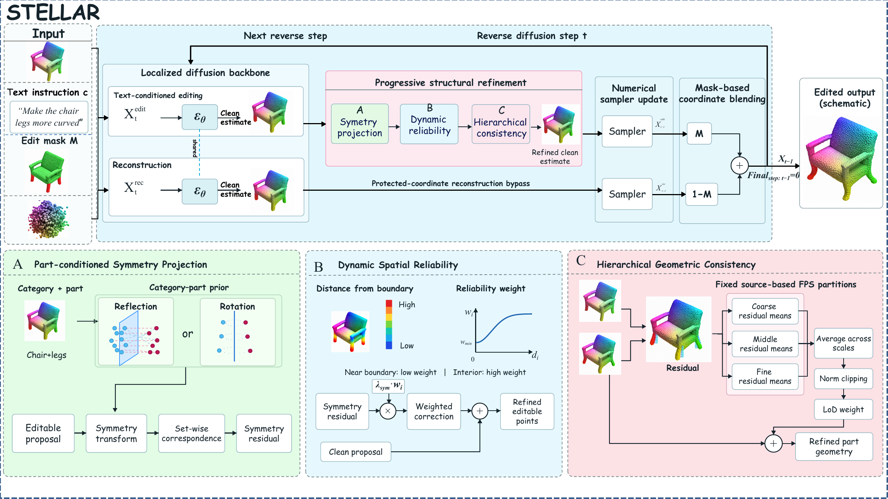
Paper results
Experimental Results
Table 1
| Semantic Fidelity | Structural Fidelity | Identity Preservation | Distribution & Category Fidelity | |||||
|---|---|---|---|---|---|---|---|---|
| Method | CLIP Sim ↑ | CLIP Dir ↓ | SDI-CD ↓ | LoD-CD ↓ | GD ↓ | l-GD ↓ | FPD ↓ | Class-D ↓ |
| ChangeIt3D | 0.21 | 1.02 | 0.7643 | 0.2791 | 0.65 | 0.19 | 183.02 | 0.18 |
| SPICE-E | 0.25 | 1.01 | 0.7842 | 0.2769 | 1.84 | 0.31 | 390.02 | 0.24 |
| BlendedPC | 0.26 | 0.99 | 0.6742 | 0.2688 | 0.34 | 0.07 | 33.64 | 0.05 |
| STELLAR | 0.2607 | 0.987 | 0.6422 | 0.2591 | 0.348 | 0.07 | 33.17 | 0.0497 |
As reported in the supplied manuscript. Higher is better only for CLIP Sim; lower is better for all other metrics. SDI-CD and LoD-CD follow the manuscript's unified structural evaluation protocol.
Table 2
| Modules | Semantic Fidelity | Structural Fidelity | Identity Preservation | Distribution & Category Fidelity | |||||||
|---|---|---|---|---|---|---|---|---|---|---|---|
| Setting | Sym. | Rel. | HGC | CLIP Sim ↑ | CLIP Dir ↓ | SDI-CD ↓ | LoD-CD ↓ | GD ↓ | l-GD ↓ | FPD ↓ | Class-D ↓ |
| Original | × | × | × | 0.2600 | 0.990 | 0.6742 | 0.2688 | 0.340 | 0.070 | 33.64 | 0.0500 |
| STELLAR w/o Rel. | ✓ | × | ✓ | 0.2602 | 0.989 | 0.6548 | 0.2637 | 0.343 | 0.071 | 33.42 | 0.0499 |
| STELLAR w/o HGC | ✓ | ✓ | × | 0.2604 | 0.988 | 0.6519 | 0.2631 | 0.345 | 0.071 | 33.35 | 0.0498 |
| STELLAR w/o Sym. | × | ✓ | ✓ | 0.2603 | 0.989 | 0.6635 | 0.2648 | 0.343 | 0.071 | 33.39 | 0.0499 |
| STELLAR | ✓ | ✓ | ✓ | 0.2607 | 0.987 | 0.6422 | 0.2591 | 0.348 | 0.070 | 33.17 | 0.0497 |
As reported in the supplied manuscript. Sym. = part-conditioned symmetry projection; Rel. = dynamic spatial reliability calibration; HGC = hierarchical geometric consistency refinement. ✓ means enabled and × means disabled.
Supplementary material
Visualizations
Supplied point-cloud figure sheets
Supplementary figure sheets
Open a sheet to inspect the supplied PDF at full resolution.
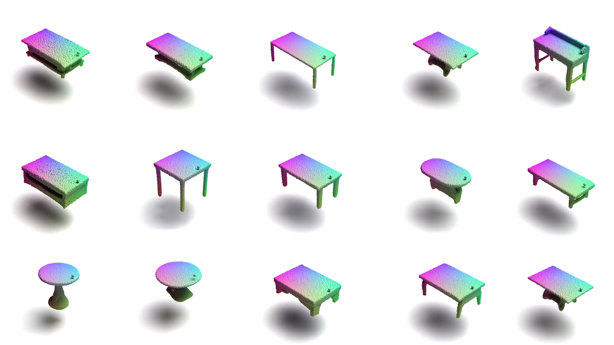
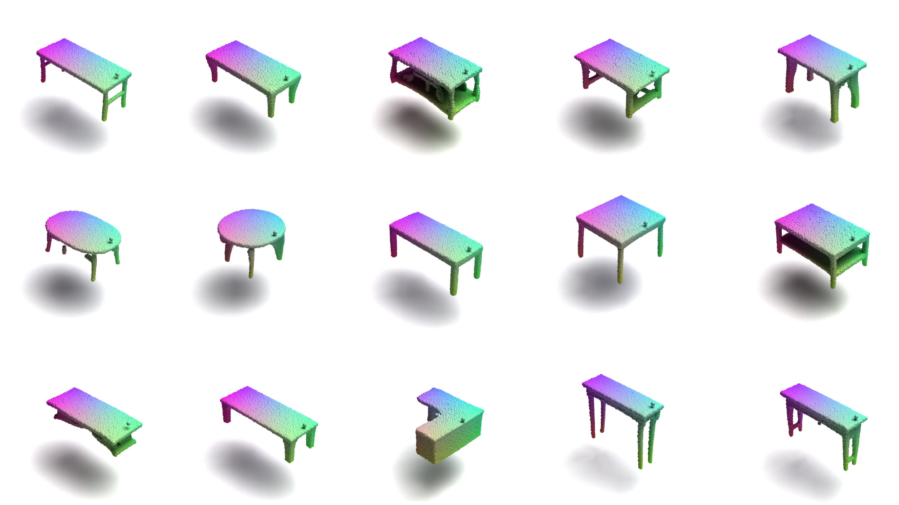
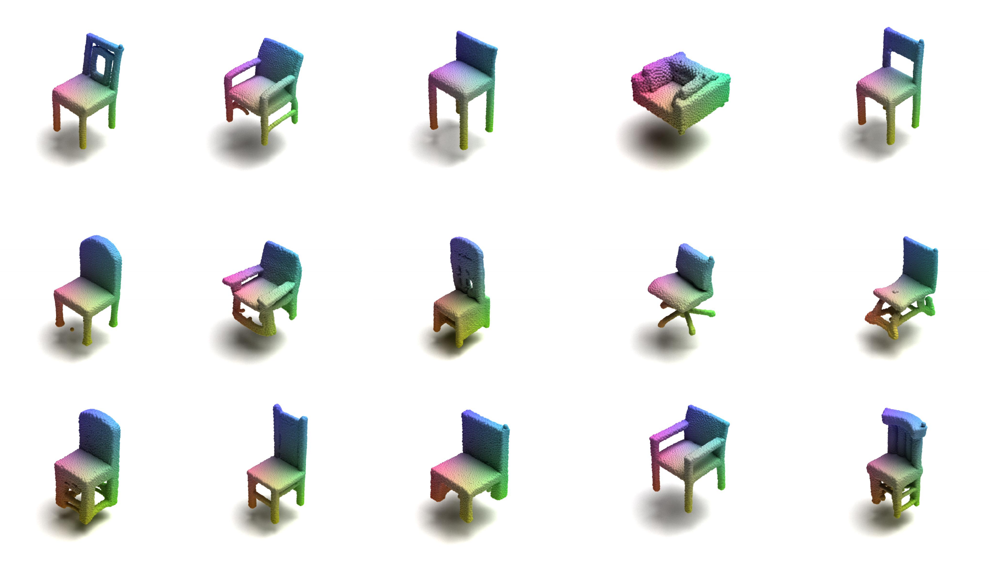
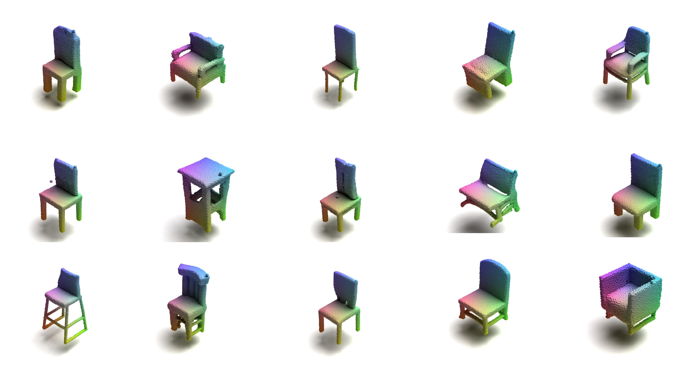
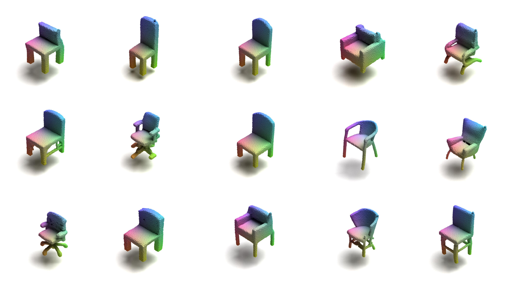
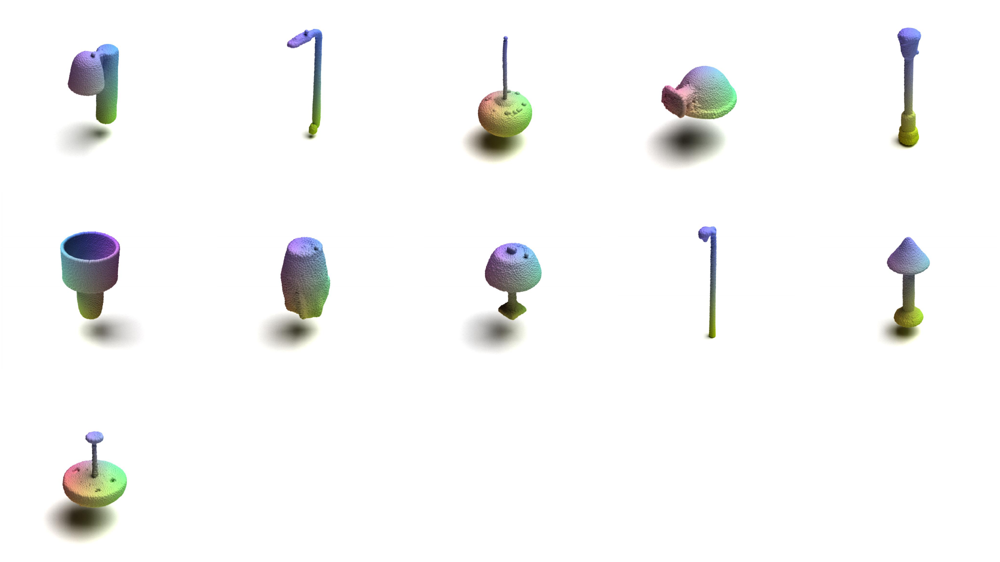
Source files
Materials
The diagrams, supplementary sheets, and animations above are the supplied project materials. Code is hosted in the separate STELLAR repository linked below. This page does not include a manuscript PDF, checkpoints, or dataset files.